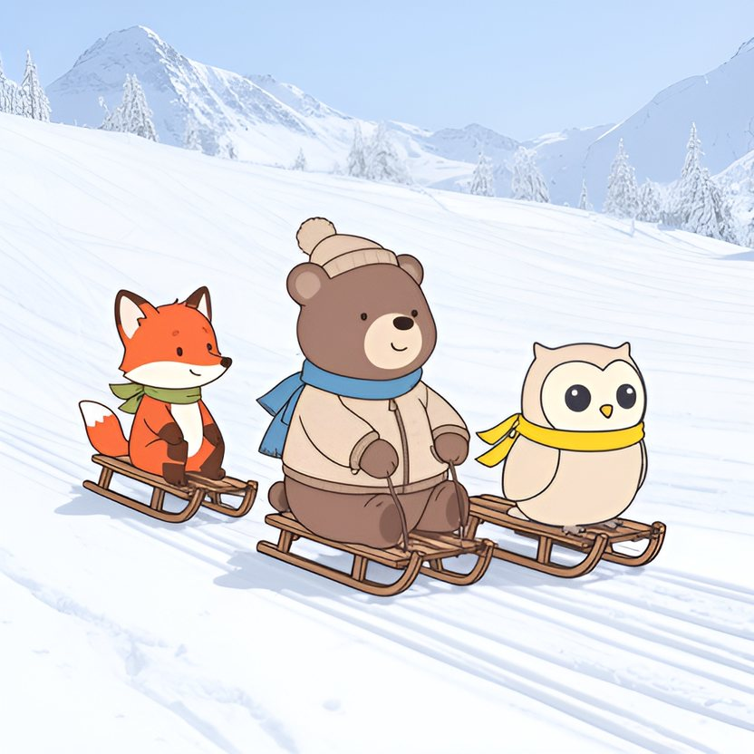

Titistoire › Les Étoiles (3-6 ans)
Nestor et la grande course de luges
Une histoire de Nestor l'ourson pour parler de : aider plutôt que gagner.

▶ Écouter et regarder l'histoire
Gratuit, sans inscription : la voix lit, le texte suit mot à mot, les images tournent comme dans un album.
Le texte de l'histoire
Aujourd'hui, à la station des Sapins Blancs, c'est la grande course de luges. Le premier arrivé en bas remporte une médaille en chocolat, large comme une assiette.
Nestor en rêve. D'habitude, il arrive toujours bon dernier : trop lent pour courir, trop lourd pour grimper. Mais en luge, plus on est lourd, plus on file ! Il tapote son gros ventre rond.
« Pour une fois, songe-t-il en empoignant sa corde, c'est moi qui vais gagner. » Monsieur Cabri porte le sifflet à sa bouche. Triiit !
La luge de Nestor s'ébranle doucement. Puis elle prend de la vitesse. Encore. Encore ! Il double Plume. Il double Filou. Il double même Rosie, qui n'en croit pas ses oreilles.
« Youpiii ! » Le vent lui plaque les oreilles en arrière. Les sapins défilent à toute allure. Nestor est premier. Premier ! De toute sa vie, cela ne lui était jamais arrivé.
Tout en bas, il aperçoit déjà la ligne d'arrivée, entre deux fanions rouges, et la médaille qui luit au soleil.
C'est alors qu'un bruit lui parvient, sur le bord de la piste. Un cri de rien du tout. « À l'aide… »
Dans un trou de neige, une luge est renversée, les patins en l'air. Et dessous, deux petites pattes gigotent. C'est Pépin le hérisson. Il a manqué le virage.
Nestor file comme le vent. Dans une seconde, il sera passé. Derrière lui, les autres arrivent. « Quelqu'un d'autre s'arrêtera bien », se rassure-t-il.
Mais les autres sont encore loin. Et Pépin est tout petit, au fond d'un trou glacé. Nestor regarde la médaille. Il regarde les petites pattes.
Alors il plante ses deux talons dans la neige. Frrrrrrrr ! Sa luge s'arrête dans un grand nuage blanc. Rosie le dépasse en trombe. Puis Filou. Puis Plume.
« Oh, zut », soupire Nestor. Puis il remonte la pente en tirant sa luge, soufflant, enfoncé dans la neige jusqu'aux genoux.
Il soulève la petite luge. Dessous, Pépin est blanc comme un bonhomme de neige, et il claque des dents. « J'ai… j'ai… froid, grelotte-t-il. Et j'ai perdu ma moufle. »
Nestor le cueille au fond du trou et le frictionne. Puis il le glisse dans son manteau, tout contre son gros ventre chaud. Il n'y a pas de meilleur radiateur qu'un ourson.
« Tu as arrêté ta course pour moi ? » s'étonne Pépin. Nestor hausse les épaules. « Hmm… Elle n'était pas si importante. » Ce n'est pas tout à fait vrai. Mais ça le devient en le disant.
La luge de Pépin est en miettes. Alors ils s'installent tous les deux sur celle de Nestor. Chargée d'un ourson et d'un hérisson, elle descend paisiblement, sans se presser.
Bien au chaud, Pépin reprend des couleurs. Dans les virages, il lève les bras. « Encore ! » Nestor rit. Tout à l'heure, il n'avait pas vu comme la montagne était belle, avec ses sapins qui étincellent.
Quand ils arrivent enfin en bas, la course est finie depuis belle lurette. Rosie porte la médaille en chocolat autour du cou.
« Dernier ! annonce le haut-parleur. Nestor ! » Quelques-uns ricanent. Alors Pépin sort la tête du manteau, et il raconte tout. Le trou. Le froid. Les talons plantés dans la neige.
Plus personne ne rit. Rosie regarde sa médaille. Elle la retire de son cou. Crac ! La voilà en morceaux. « Elle est trop grosse pour moi toute seule », décrète-t-elle.
Chacun en reçoit un bout. Et le plus gros morceau, elle le tend à Nestor, qui rosit. « Toi, tu étais premier. Je le sais bien : tu m'as doublée. »
Le soir, au chalet, tout le monde sirote un chocolat chaud. Pépin s'est assoupi sur le ventre de Nestor, roulé en boule. Personne n'ose le déplacer. Nestor non plus.
Sur la cheminée trône une nouvelle médaille. Elle est en carton, découpée un peu de guingois, coloriée au crayon. C'est Pépin qui l'a fabriquée. Dessus, il a dessiné un ourson avec un cœur.
Elle ne se mange pas. Nestor la serre pourtant sur son cœur. Il la gardera toute sa vie.